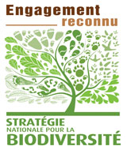
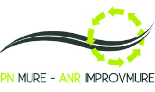

01 | Environnement
13 juin 2016
La profession décline la séquence ERC à l’industrie extractive
L’obligation légale faite aux maîtres d’ouvrage d’éviter de réduire et de compenser (ERC) les impacts de leurs projets sur les milieux naturels a été traduite par le MEEM dans une doctrine nationale (2012) rappelant les principes clés devant guider l’application de la « séquence ERC », ainsi qu’un document méthodologique « les lignes directrices » (2013). En concertation avec le MEEM, la profession vient de sélectionner le bureau d’études BIOTOPE pour les accompagner dans l’élaboration d’un guide sectoriel de ces lignes directrices. Les résultats de ces travaux sont attendus pour l’été 2017.
En savoir plus29 juin 2016
L’UNPG au Forum des gestionnaires des espaces naturels
Le SHOM, opérateur public pour l’information géographique maritime et littorale de référence, présente ses activités et produits lors de la prochaine réunion de Commission Granulats marins de l’UNPG.
En savoir plus14 juin 2016
L’UNICEM rencontre les représentants des exploitants agricoles
Arnaud Colson [UNPG] et Eric Liglet [UNICEM Centre] ont accueilli Christiane Lambert, vice-présidente de la FNSEA, sur la carrière de Villermain dans la Beauce. La FNSEA participait à cette visite à l’invitation de l’UNICEM, dans le cadre des discussions sur l’élaboration du décret relatif à la compensation agricole, pour constater la réalité des réaménagements de carrières à vocation agricole. Et de montrer le caractère temporaire des carrières et justifier ainsi leur exclusion du dispositif. .
En savoir plus11 octobre 2016
L’UNPG rencontre les agriculteurs sur la compensation collective agricole
Arnaud Colson participe à une journée d’information et d’échanges, à l’invitation de l’Assemblée permanente des Chambres d’agriculture (APCA), de la FNSEA et des Jeunes agriculteurs, sur la compensation collective agricole. L’occasion de souligner le caractère temporaire de l’exploitation des carrières, sans artificialisation des sols. .
Réaménagement agricole des carrières
Au moment où les agriculteurs préparent l’application, à partir du 1er décembre 2016, de la compensation collective agricole, cette brochure valorise la capacité des carriers à restituer des terrains à l’agriculture.
En consultation29 juin 2016
Industries extractives et Parcs naturels régionaux : un partenariat pour promouvoir les bonnes pratiques
L’UNICEM, la Charte Environnement des Industries de Carrières et la Fédération des Parcs naturels régionaux de France signent une convention les engageant dans une démarche de partenariat pour une durée de 3 ans. Ce rapprochement marque la volonté commune des trois entités de s’inscrire dans une démarche de progrès conciliant développement économique des territoires et préservation de l’environnement. La première réunion du Comité de suivi a lieu en septembre 2016.
En téléchargement30 juin 2016
Emissions des Carrières dans l’AIR : des premiers résultats
Lors d’un comité de pilotage, l’UNPG dresse un point d’avancement de son projet EMCAIR (2015-2017) relatif aux émissions des carrières dans l’air, mené avec l’ADEME. Deux campagnes de mesures ont déjà eu lieu en Nord–Pasde-Calais, et les prochaines campagnes se dérouleront en Bretagne et Pays de la Loire.
En savoir plus9 juillet 2016
L’UNPG au Conseil national de suivi du réseau Natura 2000
Le Conseil national de suivi du réseau Natura 2000 a abordé deux dossiers nous concernant : la mise à jour des listes Natura 2000 à la suite des évolutions réglementaires, et le rapport de mission sur l’analyse du dispositif en France.
En savoir plus8 septembre 2016
L’ONF visite la carrière de Creuzeval (69)
Lors d’une formation de l’ONF, Mathieu Hiblot a échangé avec les agents sur les enjeux des producteurs de granulats : études et inventaires naturalistes, mesures compensatoires, gestion des habitats, etc.
En téléchargement18 octobre 2016
Arnaud Colson rencontre Pierre Weick, Directeur de la Fédération des PNR
Lors de la première réunion du Comité de suivi, l’UNICEM, la Fédération des PNR et la Charte environnement organisent la mise en œuvre des actions issues de leur partenariat.
En savoir plus19 octobre 2016
L’UNPG réunit son Conseil scientifique sous la présidence de Jean-Claude Lefeuvre, Professeur émérite du MNHN
Organisé par Christian Béranger, avec la participation de Jean-Claude Lefeuvre, Professeur émérite du MNHN, Bernard Chevassus-au-Louis, Président de l’association Humanité et Biodiversité, Bernard Frochot, Professeur émérite à l’université de Bourgogne, et Jean-Christophe Kovacs, Président d’Écosphère, le Conseil scientifique de l’UNPG est une instance de dialogue sur les sujets environnementaux. La séance a porté sur les enjeux de la loi « biodiversité » et de la compensation. Ses contributions seront versées au Conseil d’orientation stratégique de l’UNPG qui se réunira, pour la première fois, en janvier 2017.
L’UNPG soutient le projet Life intégré sur les habitats naturels marins
Porté par l’Agence des aires marines protégées, ce projet intégré s’inscrit dans la pleine mise en œuvre de Natura 2000 en mer, sur l’ensemble de la France métropolitaine. L’objectif, au terme du projet, est l’amélioration de l’état de conservation des habitats marins.
En savoir plusL’UNPG met à jour son outil d’évaluation des émissions de CO2 et des consommations d’énergie
Lancée en 2010 par l’UNPG et la Charte environnement, une nouvelle version (V3) est téléchargeable. Elle actualise certains facteurs d’émission liés à l’énergie.
En téléchargement8 novembre 2016
L’UNPG dialogue avec les apiculteurs et le MAAF
Avec le MAAF, dans le cadre du plan de développement durable de l’apiculture, une rencontre avec ADA France a permis d’échanger sur les actions des deux professions en faveur de l’apiculture et des pollinisateurs. Des pistes de collaboration ont été identifiées.
16 novembre 2016
L’UNPG au Forum des gestionnaires des espaces naturels
Cet évènement avait pour objectif de permettre aux acteurs de la biodiversité d’échanger leurs expériences et savoir-faire. Fabrice Frebourg [UNPG] a présenté les méthodes, outils et techniques favorisant la restauration et la mise en réseau des habitats en carrières.
En savoir plus23 novembre 2016
L’UNPG à la Rencontre science-gestion de l’ONEMA
Christian Béranger anime un atelier sur la gestion des ressources minérales via l’exploitation de gravières. Cet évènement a lieu à Aix-en-Provence.
En savoir plus24 novembre 2016
L’UNPG au Forum Biodiversité & économie
Christian Beranger [UNPG] anime un atelier sur les centres de ressources. Avec l’arrivée de l’AFB, plusieurs centres de ressources thématiques gérés par l’Aten et l’ONEMA ont vocation à être réunis et mis en valeur, d’autres sont à créer (espèces exotiques envahissantes).
En savoir plus
L’UNPG fait le point sur l’utilisation des floculants en carrières
L’utilisation de floculants en carrières est, dans certains contextes, nécessaires pour accélérer la décantation des matières en suspension issues du lavage des granulats. Face aux enjeux réglementaires, environnementaux et sanitaires, l’UNPG a souhaité parfaire ses connaissances afin d’évaluer les risques éventuels liés à l’utilisation de floculants.
En téléchargementÉlaboration des études d’impact de carrières : guide de recommandations
L’UNPG met à la disposition de ses adhérents et des syndicats de l’industrie extractive un guide de recommandations pour l’élaboration des études d’impact de carrières. Cet ouvrage est issu d’une collaboration avec le ministère de l’Environnement. Il vise à répondre aux diverses questions soulevées par les textes réglementaires. Une mise à jour du guide aura lieu en 2017 pour tenir compte des récentes évolutions réglementaires.
En téléchargementLa profession dispose d’un siège au comité national de la biodiversité
Le MEEM a répondu favorablement à la demande de l’UNICEM, de disposer d’un siège au comité national de la biodiversité. Cette instance a un droit de regard sur le contrat d’objectif et les orientations stratégiques de l’agence française de la biodiversité. La profession est représentée par Christian Beranger [UNPG].
30 mars 2017
L’UNPG reçoit Jean-Michel Zamitte, adjoint au Directeur général de l’Agence française pour la biodiversité
À l’occasion de sa réunion de Commission Environnement de l’UNPG, Jean-Michel Zamitte présente l’organisation de la nouvelle agence et sa feuille de route, ainsi que sa déclinaison territoriale.
En savoir plus9 mars 2017
Le nouveau plan d’engagement de l’UNPG reconnu par le MEEM
Le comité national de suivi de la SNB a accordé la reconnaissance pour une durée de 3 ans au nouvel engagement de la profession en faveur de la biodiversité.
En savoir plus24 avril 2017
Autorisation environnementale : les étapes et les acteurs de la procédure décryptés
Le MEDEF organise une rencontre avec le MEEM sur le thème de la nouvelle autorisation environnementale. Cette manifestation s’articule autour de deux tables rondes dont l’une est consacrée aux carrières, à laquelle participe Nicolas Vuillier [UNPG].
02 | Engagment SNB
9 mars 2017
Le nouveau plan d’engagement de l’UNPG reconnu par le MEEM
Le comité national de suivi de la SNB a accordé la reconnaissance pour une durée de 3 ans au nouvel engagement de la profession en faveur de la biodiversité.
En savoir plus
ZOOM sur le plan 2016-2019
Guide sectoriel des lignes directrices de la séquence « ERC »
2016 - En concertation avec le MEEM et avec l’appui de BIOTOPE, l’UNICEM a lancé l’élaboration d’un guide sectoriel des lignes directrices ERC. Les résultats de ces travaux sont attendus fin 2017.
Constitution d’un conseil scientifique sur la biodiversité
2016 - Le Conseil scientifique de l’UNPG est une instance de dialogue sur les sujets environnementaux dont la première séance a porté sur les enjeux de la loi « biodiversité » et de la compensation.
Partage des bonnes pratiques en faveur de la biodiversité
L’UNPG s’attachera à faire connaitre ses études et publications auprès des syndicats de l’UNICEM, qui seront également invités à partager les bonnes pratiques de leurs entreprise
Promotion du centre de ressources du génie écologique de l’AFB
L’UNPG s’engage à promouvoir le centre de ressources du génie écologique (CRGE) auprès des adhérents et les inviter à transmettre leurs retours d’expériences afin d’alimenter ce dernier.
En savoir plusAccompagnement des parties prenantes sur la biodiversité
L’UNPG met à profit son expertise aux réflexions autour de la biodiversité, à l’occasion de colloques, groupes de travail, formations et autres évènements organisés par les parties prenantes.
ZOOM sur le plan 2012-2015
Exposition Biodiversité et carrières, un lien naturel
Réalisée pour les salariés et les parties prenantes, cette exposition montre ce qu’est la biodiversité sur les sites de carrières et présente les engagements et les actions quotidiennes de la profession en sa faveur.
Effet des carrières sur les connectivités écologiques
2014 - Cette thèse de doctorat, réalisée en partenariat avec le MNHN, a permis de mieux cerner les enjeux de la TVB et de montrer les potentialités des carrières dans le soutien des connectivités écologiques.
En téléchargementConvention avec la Fédération des conservatoires botaniques nationaux
2013 - L’UNPG signe un partenariat, soutenu par le Ministère de l’Environnement, visant à favoriser le développement de filières de semences ou de matériel végétal d’origine locale.
En savoir plusOrganisation d’une formation sur le génie écologique
2014 - La Charte Environnement des industries de carrières consacre sa formation annuelle à la conduite des travaux de génie écologique des carrières, sensibilisant ainsi 454 salariés à ces enjeux.
Guide pratique de l’engagement SNB pour les carriers
2014 - L’UNPG publie un guide pratique de l’engagement SNB pour les producteurs de granulats. Ce guide résume les objectifs et le contenu de la SNB, et précise aux entreprises comment s’engager par des exemples d’actions à mettre en place.
En savoir plusGuide d’identification et de lutte contre les espèces invasives
2014 - Afin de limiter l’installation des espèces exotiques envahissantes (EEE) en carrières, et anticiper le règlement européen et la stratégie nationale sur les EEE, l’UNPG met à la disposition des adhérents un guide pour identifier et lutter contre ces espèces.
En savoir plusGuide des méthodes de diagnostic écologique des milieux
2015 - L’UNPG publie un guide des méthodes de diagnostic des milieux naturels. Cet ouvrage présente, sous forme de fiches méthodologiques techniques, une synthèse du savoir-faire actuel en matière de méthodes de diagnostic écologique des milieux.
En savoir plusCréation avec l’ATEN du centre de ressources sur le génie écologique
2015 - L’UNPG est co-créatrice du centre de ressources sur le génie écologique. Animé par l’ATEN et piloté par différents partenaires, il présente de nombreux retours d’expérience.
Plus de 100 experts au colloque scientifique sur les abeilles sauvages
2016 - L’UNPG, en partenariat avec la Charte Environnement des industries de carrières Nord-Pas-de-Calais et l’Établissement Public Foncier Nord-Pas-de-Calais, organisait une journée de conférences.

03 | Législation & Réglementation
22 juillet 2016
Redevance en mer : 60 députés défendent la position de l’UNPG auprès du Conseil constitutionnel
À la suite du vote de la loi « biodiversité » lors d’une lecture définitive à l’Assemblée nationale, l’UNPG a obtenu le soutien de 60 députés pour contester auprès du Conseil constitutionnel la nouvelle redevance sur les granulats marins exploités au-delà des 12 milles. Toutefois, le Conseil constitutionnel a confirmé la mesure. L’UNICEM et l’UNPG ont donc saisi le Conseil d’Etat pour obtenir l’annulation du décret d’application. Décision à venir.
En savoir plus15 septembre 2016
Schéma régionaux des carrières
Après échange avec Rémi Galin, Chef du Bureau de la gestion et de la législation des ressources minérales au MEEM, la délégation de l’UNICEM, emmenée par Nicolas Vuillier [UNPG], a fait le point sur le projet de circulaire. Plusieurs de nos demandes sont prises en compte. Toutefois, la qualification de gisements d’intérêt national et régional sera « très sélective ». Notre proposition « tout ce qui n’est pas d’intérêt national est d’intérêt régional » n’est que partiellement retenue puisque l’ensemble des gisements potentiellement exploitables identifiés par le schéma, y compris ceux qui ne seraient pas d’intérêt national ou régional, seront pris en compte par les documents d’urbanisme.
30 septembre 2016
Révision de l’arrêté du 22 septembre 1994
Par arrêté ministériel, l’arrêté du 22 septembre 1994 relatif aux exploitations de carrières et aux installations de premier traitement est modifié. Cette modification porte sur la gestion des poussières et sur la définition des déchets utilisables pour le remblayage des carrières. Nous clôturons un travail collaboratif avec les services du ministère de plus de quatre ans. Les nouvelles prescriptions relatives à la gestion des poussières ont été âprement discutées. L’arrêté sécurise la définition des déchets utilisables pour le remblayage et conforte les carrières comme filière de valorisation.
En savoir plusOctobre 2016
Compensation agricole : la profession demande l’annulation du décret
Le Conseil d’État a été saisi par l’UNPG pour obtenir l’annulation du décret ayant permis l’entrée en vigueur de l’obligation pour certains porteurs de projets d’élaborer une étude préalable de leurs impacts sur l’économie agricole. Ce recours n’est pas suspensif. En attendant la décision au fond, le Conseil d’Etat a d’ores et déjà jugé que la délivrance de l’autorisation d’exploiter une carrière n’était pas conditionnée à un accord sur la compensation agricole et qu’en tout état de cause, l’exploitant restait seul maître des mesures compensatoires qu’il proposerait.
En savoir plusJuin 2016
TGAP « poussières » : l’UNPG conteste la position exprimée par les Douanes
Des contrôles en carrières sont opérés par les Douanes au titre de la TGAP dans sa composante « poussières totales en suspension » (PTS). Si le code des Douanes vise les PTS, les services des Douanes pourtant définissent celles-ci comme l’ensemble des poussières totales, y compris celles sédimentables. Or, les zones d’extraction émettent principalement des poussières sédimentables et donc n’étant pas des PTS (PM2,5 et PM10). Par ailleurs, l’outil GEREP sur lequel se basent les Douanes est un outil destiné à estimer des émissions diffuses uniquement pour des déclarations à faire au titre de l’environnement. Il n’est pas un outil suffisamment précis pour servir d’assiette à une taxation. Au bilan, la profession considère que sont soumises à la TGAP les seules émissions canalisées et mesurées en sortie des installations de traitement/usines, dès lors que celles-ci sont soumises à autorisation (par opposition à celles soumises à enregistrement/ déclaration). Pour l’UNPG, la position exprimée par les Douanes n’est pas acceptable et entend saisir la justice ainsi qu’accompagner les entreprises qui décideront de contester les éventuelles rectifications douanières.
04 | Santé & Sécurité
19 septembre 2016
L’UNPG remplace les FDS pour les granulats par une note d’information Santé-Sécurité/Environnement
L’UNPG simplifie la gestion administrative à charge des producteurs de granulats, en remplaçant les fiches de données de sécurité (FDS) par des notes d’information Santé-Sécurité/Environnement. Le producteur de granulats n’est donc pas obligé de fournir à son client une FDS. En revanche, vu les exigences de communication sur l’identification et la mise en œuvre des mesures de gestion des risques lors de l’utilisation des granulats par les clients, le règlement REACH oblige le producteur de granulat à fournir une note d’information.
En savoir plusGuide de bonnes pratiques : les addictions en milieu professionnel
À l’initiative de l’UNICEM Rhône-Alpes, la collection de guides des bonnes pratiques s’est enrichie d’un nouveau livret portant sur les risques liés aux addictions en milieu professionnel. Des exemplaires sont disponibles sur demande auprès du secrétariat.
En savoir plus21 novembre 2016
L’UNPG auditionnée par l’ANSES dans le cadre de sa saisine sur la silice cristalline
Dans l’objectif de mettre à jour les connaissances sur les dangers, expositions et risques liés à la silice cristalline, et à proposer des mesures de réduction des risques et de prévention, l’ANSES a engagé un cycle de rencontres professionnelles. Lors d’une audition, la délégation de l’UNICEM, emmenée par Arnaud Colson [UNPG], a décrit la filière et son environnement, et valorisé les actions de prévention en place. L’ANSES doit rendre son rapport de saisine à l’Administration, en mars 2018 au plus tard.
Mars 2017
Gestion des poussières
L’UNPG met à jour son guide méthodologique de prévention des risques liés à l’exposition aux poussières en carrières. Cette nouvelle édition s’inscrit dans une démarche de prévention globale des émissions de poussières en carrières. Elle apporte des précisions à la méthodologie d’évaluation du risque d’exposition professionnelle aux poussières en carrières et elle complète le guide de parties consacrées aux émissions de poussières dans l’environnement, à la méthodologie d’évaluation des risques liés aux émissions de fibres asbestiformes, et aux équipements de protection collective permettant de traiter efficacement les différentes formes de poussières. Il est complété d’un guide dédié aux plateformes de recyclage.
18 janvier 2017
Silice cristalline : le Ministère du Travail précise ses intentions
À la demande de l’UNPG, dans le cadre d’une réunion d’échanges concernant l’intention, déposée par le Ministère du Travail, d’une demande de classification harmonisée de la silice cristalline en Europe, ce dernier a précisé les points suivants : 1/En mars 2017, la France ne déposera pas à cette date de demande de classification harmonisée au plan européen, car elle ne dispose pas à ce jour d’éléments nouveaux lui permettant de motiver sa demande. 2/Néanmoins, la France va maintenir au niveau européen auprès de l’ECHA son intention de demande de classement CLP, dans l’attente des conclusions de l’ANSES en mars 2018. 3/Au plan national, le Ministère a demandé à l’ANSES, malgré ses doutes, d’aller jusqu’au bout de son expertise pour évaluer les bénéfices et les conséquences d’un classement CLP, précisant que le sujet, pour le ministère, n’est pas la silice sous toutes ses formes, mais uniquement les poudres fabriquées, utilisées et commercialisées intentionnellement pour leurs propriétés. Le classement CLP ne viserait donc pas les granulats. En résumé, considérant que la protection des travailleurs exposés aux poussières de silice cristalline alvéolaire est renforcée par leur classement dans la directive CMR (cancérogène), cette même fraction qui peut être fabriquée, utilisée et commercialisée intentionnellement pour ses propriétés doit-elle faire l’objet d’un classement dans le règlement CLP (étiquetage) ?
En savoir plusSilice cristalline : les indicateurs clés de performance sont stables ou en amélioration continue
Les 16 signataires de NEPSI publient leur 5e rapport sur l’application de l’accord européen sur la protection de la santé des travailleurs par l’observation de bonnes pratiques dans le cadre de la manipulation et de l’utilisation de la silice cristalline et des produits qui en contiennent. Par rapport à 2014, et sur une période plus longue depuis 2008, tous les indicateurs clés de performance sont stables ou en amélioration.
En savoir plus21 mars 2017
Silice cristalline alvéolaire : l’UNPG rencontre la Représentation Permanente de la France auprès de l’Union européenne
Dans la perspective d’un trilogue sur la révision de la directive CMD, auquel participeront des représentants du Parlement européen, du Conseil de l’Europe et de la Commission européenne, l’UNPG rencontre la Représentation Permanente de la France auprès de l’Union européenne pour obtenir une position forte du Conseil et de la Commission, et garantir une VLEP 0,1 mg/m³.
En savoir plus05 | Technique
16 juin 2016
L’UNPG présente le projet national RECYBETON à l’AFITE
L’AFITE organisait un colloque sur l’économie circulaire. Cette journée visait à faire le point, au travers de nombreux exemples et témoignages d’industriels et de représentants de fédérations d’entreprises de recyclage, sur les modalités d’application tant en France qu’en Europe, de la directive-cadre en matière de sortie de statut de déchet. Raphaël Bodet [UNPG] a présenté les travaux du projet national RECYBETON pour le recyclage complet des bétons.
En savoir plus24 juin 2016
Europe : poursuite de la révision des normes de spécifications des granulats
Initiée en 2013, cette révision prend en compte le règlement européen sur les produits de la construction (RPC), introduit de nouvelles catégories pour certaines caractéristiques et les rend plus lisibles et compréhensibles par un effort d’unification/harmonisation. La première enquête européenne [enquête CEN] et l’examen des commentaires viennent de s’achever par la rédaction de nouveaux projets en vue d’une 2e enquête [vote formel]. L’UNPG représente la France et veille à limiter l’impact de ces normes à paraître en 2017, pour les producteurs français.
7 octobre 2016
L’UNPG à la conférence « Économie de matière et recyclage »
Après leur succès en 2014, les Rencontres Béton font leur retour à la Maison de l’architecture en Île-de-France, avec la participation de Sophie Decreuse [UNPG] sur les granulats de recyclage.
En savoir plus14 décembre 2016
Reprise des travaux de révision du guide de réutilisation des terres excavées en technique routière
Le MEEM réactive son groupe de travail, auquel participe l’UNPG, pour la mise à jour du guide de réutilisation des terres excavées en technique routière. Cela fait suite à plusieurs mois de travail au sein de la DGPR pour lever les points de discussion, liée notamment au fond géochimique, qui ont conduit à l’interruption des travaux en juin 2015.
15 mars 2017
Projet National MURE : une journée d’échange
Dans le cadre du PN MURE, auquel participe l’UNPG, est organisée une journée d’information et d’échanges sur l’apport des régénérants dans le recyclage des enrobés.
En savoir plus9 mars 2017
Projet National RECYBETON : une journée d’échange
Dans le cadre du PN RECYBETON pour le recyclage complet des bétons, auquel participe l’UNPG, les acteurs présentent les résultats récents les plus significatifs.
En savoir plusL’UNPG poursuit son partenariat avec ARMINES
Après l’étude menée en 2015, confirmant l’intérêt de la méthode d’évaporométrie pour mesurer l’absorption des sables fillérisés, l’UNPG poursuit en 2016 avec ARMINES l’évaluation de cette méthode en testant sa reproductibilité et sa répétabilité. Elle permettrait de mesurer l’absorption d’eau des sables en prenant en compte les fines, à l’inverse de la méthode normalisée qui les exclut. L’objectif est de pouvoir disposer d’une méthode alternative à la norme actuelle.
En savoir plusLa charte qualité des réseaux d’eau potable
L’UNPG renouvelle son soutien à l’ASTEE, qui publie une nouvelle charte qualité des réseaux d’eau potable. Un outil clé pour l’ensemble des parties prenantes des travaux de création d’entretien et de réhabilitation de réseau.
En savoir plusLa charte qualité des réseaux d’assainissement
L’UNPG renouvelle son soutien à l’ASTEE, qui publie une nouvelle charte qualité des réseaux d’assainissement. Un outil clé pour une gestion rationnelle des matériaux, des produits et des déchets pour la construction des ouvrages.
En savoir plusLe CEREMA publie l’atlas des carrières d’enrochements
Cette étude, à laquelle a participé l’UNPG, recense au plan national les carrières susceptibles de produire ces matériaux et leurs caractéristiques.
En téléchargementCampagne d’essais inter-laboratoires des granulats
Les objectifs sont multiples. D’une part, pour votre entreprise, en vous positionnant par rapport à la moyenne des résultats obtenus, et de valoriser votre participation à cette étude auprès vos clients et/ou des organismes de certification. Pour l’UNPG, en permettant de valider les modes opératoires concernés et de déterminer les besoins de révision, pour conforter également ou réviser les incertitudes de mesure U de la norme NF P18-545.
Étude de mesure de la blocométrie à l’aide d’un drone
L’UNPG lance une étude de la mesure de la blocométrie des enrochements à l’aide d’un drone.
Radioactivité naturelle : transposition de la directive Euratom
Le MEEM a engagé la transposition de la directive Euratom de 2013 fixant les normes de base relatives à la protection sanitaire contre les dangers de l’exposition aux rayonnements ionisants. Cette directive, dont le premier texte date de 1959, a vu son champ d’application étendu au rayonnement naturel des matériaux de construction. L’enjeu pour la profession, dont le dispositif entrera en vigueur le 1er janvier 2018, porte sur d’éventuelles restrictions d’usage pour certains granulats destinés à la fabrication du béton.
En savoir plusL’UNPG soutient la candidature de la France pour organiser la conférence ICAAR 2020
Tous les quatre ans depuis 1974, une conférence internationale est organisée pour traiter de l’étude de l’alcali-réaction. L’UNPG soutient la candidature de la France, présentée par l’IFSTTAR, pour organiser la future conférence internationale ICAAR 2020 à Paris (Champs-sur-Marne). L’occasion de présenter et défendre le savoir-faire français de la profession.
06 | Transport & Logistique
15 septembre 2016
L’État lance un plan d’action pour le fret fluvial
L’obligation légale faite aux maîtres d’ouvrage d’éviter de réduire et de compenser (ERC) les impacts de leurs projets sur les milieux naturels a été traduite par le MEEM dans une doctrine nationale (2012) rappelant les principes clés devant guider l’application de la « séquence ERC », ainsi qu’un document méthodologique « les lignes directrices » (2013). En concertation avec le MEEM, la profession vient de sélectionner le bureau d’études BIOTOPE pour les accompagner dans l’élaboration d’un guide sectoriel de ces lignes directrices. Les résultats de ces travaux sont attendus pour l’été 2017.
6 octobre 2016
L’UNPG à la conférence ministérielle pour la relance du fret ferroviaire
Après des années de travail et de concertation à laquelle l’UNPG a participé s’est tenue la 5e conférence ministérielle pour la relance du fret ferroviaire. Le ministre Alain Vidalies a présenté le plan d’actions du Gouvernement : 1/ prolonger de 3 ans (2018/2020) la contribution pour la pérennisation des lignes capillaires, de 10 M€ par an ; 2/ le référentiel de maintenance a fait l’objet d’un arrêté le 28 septembre 2016 et poursuite du groupe de travail pour aller plus loin dans la simplification ; 3/démarches auprès de l’Europe pour des aides publiques pour les secondes parties des ITE.
14 juin 2016
Hausse du trafic de granulats par fer
Les chiffres de trafic au regard de la baisse d’activité de 2015 (-7 % de la production en volume) révèlent de bonnes surprises. Le volume transporté aurait progressé de +18,9 % (à 11,334 Mt), les tonnes-km augmentant plus sensiblement encore (+24,2 % à 2,356 milliards de tk). En parallèle, la distance moyenne s’élève un peu à 209 km (soit +4,5 %). La hiérarchie des flux régionaux est assez stable tandis que les trafics infrarégionaux affichent une hausse sensible : 34,2 % du trafic total (contre 26,6 % en 2014). Ces bons chiffres traduisent l’effort des professionnels et leur implication dans une stratégie de développement du transport alternatif ainsi que, sans doute, une meilleure maturité des opérateurs ferroviaires privés avec une offre mieux adaptée.
15 novembre 2016
L’UNPG à la journée sur le fret ferroviaire et les OFP
Les opérateurs ferroviaires de proximité (OFP) ont invité Arnaud Colson, Président de l’UNPG, à animer une table ronde consacrée aux capillaires et aux infrastructures de service. Avec 11,3 Mt de granulats transportés en 2015, le tonnage achenimé par le fret augmente, mais des marges de progression sont encore importantes !
En savoir plusÉvaluation des impacts environnementaux du transport des granulats
Des travaux visant à développer une interface pour estimer et simuler les impacts environnementaux et les coûts de maintenance des infrastructures en fonction des choix logistiques (route, fer, eau) retenus au départ des carrières sont en cours dans le cadre d’une expérimentation en Normandie.
07 | Livre blanc
13 octobre 2016
Conférence-débat
Lors du congrès-exposition de la SIM, l’UNPG organisait une conférence-débat avec la participation du Ministère de l’Environnement, de l’Énergie et de la Mer (MEEM).
13 octobre 2016
Arnaud Colson accueille Philippe Guillard sur le stand de l’UNICEM
À l’occasion de sa participation à la conférencedébat de l’UNPG, Philippe GUILLARD, Directeur général adjoint de l’Aménagement, du Logement et de la Nature au MEEM, a visité le stand de l’UNICEM.
De gauche à droite : Nicolas Vuillier [Past-président de l’UNPG], Rémi Galin [Chef de Bureau de la gestion et de la législation des ressources minérales au MEEM], Arnaud Colson [Président de l’UNPG), Philippe Guillard.
14 juin 2016
L’UNPG dresse un premier bilan de son livre blanc
Cinq ans après sa parution, l’UNPG dresse un premier bilan de son « Livre blanc 2030 » qui lui a servi de fil conducteur aux différents travaux et consultations auxquels elle a participé.
Téléchargement13 octobre 2016
De gauche à droite : Christian Béranger [Président de Commission Environnement de l’UNPG], Valérie Cornet [membre de Commission Transport & Logistique de l’UNPG], Michel Zablocki [membre de Commission Recyclage & Valorisation de l’UNICEM], Olivier Viano [Secrétaire de Commission Législation & Réglementation de l’UNPG], Nicolas Vuillier [Past-président de l’UNPG].
50 inspecteurs des DREAL à la conférence-débat de l’UNPG
Franc succès pour la conférence-débat de l’UNPG qui a accueilli plus de 100 personnes, dont 50 inspecteurs des DREAL. Les adhérents de l’UNPG ont également pu participer à la réunion organisée par le MEEM, consacrée à la surveillance environnementale autour des carrières. Cinq représentants de la profession ont partagé les enjeux et les travaux sur lesquels œuvre l’UNPG.
TÉMOIGNAGES
Dans le cadre de sa conférence-débat, l’UNPG a invité de grands témoins à intervenir sur les nouveaux enjeux pour les producteurs de granulats.
Arnaud Gossement
Arnaud GOSSEMENT est avocat associé, gérant et fondateur du Cabinet Gossement Avocats.
EcouterLaurence Monnoyer-Smith
Laurence MONNOYER-SMITH est Commissaire générale au développement durable au MEEM.
EcouterChristian Rose
Christian ROSE est Délégué général à l’Association des usagers de transport de fret (AUTF).
EcouterÉric Berger
Éric BERGER est Président de Connexion21. L’association qu’il préside représente des acteurs de la construction.
EcouterRémi Galin
Rémi GALIN est Chef de Bureau de la gestion et de la législation des ressources minérales non énergétiques au MEEM.
Ecouter08 | Développement durable
8 juin 2016
Développement durable : l’UNPG récompense les producteurs de granulats
L’UNPG a dévoilé les lauréats de son concours Développement durable et attribué le Grand Prix national aux Carrières du Boulonnais pour le site de Ferques (Pas-de-Calais). Décernés par un jury indépendant, ces trophées récompensent, tous les 3 ans, l’engagement responsable et volontariste des carriers français en faveur du développement durable. Chaque lauréat sélectionné est ensuite amené à représenter la France au concours européen, organisé par l’UEPG, dans sa catégorie correspondante.
En savoir plusLa composition du jury du concours national
Le jury du concours s’est réuni dans les locaux de l’Assemblée nationale. Il était composé (de gauche à droite) de : Bertrand Pancher, François Bersani, Bernard Labat, Rémi Galin, Dominique Bidou.
En savoir plusLe témoignage du président du jury national
Le témoignage du président du jury, Bertrand Pancher, député-maire de Bar-le-Duc (Meuse), président du think-tank Décider ensemble.
En savoir plusSélection du jury : catégorie « Réaménagement »
L’alliance du génie écologique et des travaux publics pour recréer des écosystèmes - Ballastière d’Yville-sur-Seine - 76 (Seine-Maritime)
En savoir plusSélection du jury : catégorie « Meilleures pratiques environnementales »
Préservation de la ressource en eau - Site de Saint-Loup - 03 (Allier)
En savoir plusSélection du jury : catégorie « Biodiversité »
La biodiversité en trois volets - Site de Ferques - 62 (Pas-de-Calais)
En savoir plusSélection du jury : catégorie « Partenariat avec les collectivités locales »
Les richesses du Plateau de Rompon - Site Le Pouzin - Plateau de Rompon - 07 (Ardèche)
En savoir plusSélection du jury : catégorie « Contribution économique à la société »
La boucle est bouclée ? - Carrière des « Rives du Beaujolais » - 69 (Rhône)
En savoir plusSélection du jury : catégorie « Meilleures pratiques opérationnelles, innovation process ou produits
Réduction de la production de produits stériles par l’investissement - Carrière de Sainte-Colombe-dela-Commanderie - 66 (Pyrénées orientales)
En savoir plus16 novembre 2016
Développement durable : découvrez les lauréats européens 2016
À l’occasion de la remise des prix de son concours européen « développement durable » pour 2016, l’UEPG publie une brochure sur les 41 meilleurs exemples en Europe
En savoir plus09 | Vie de l’UNPG
27 janvier 2017
L’UNPG installe son Conseil d’orientation stratégique
L’UNPG installe son Conseil d’orientation stratégique. Il a réuni un panel d’experts variés, touchant par définition de nombreux champs disciplinaires : Sandrine Bélier [Directrice d’Humanité et Biodiversité, ancienne députée européenne (EELV)], François Bersani [Ingénieur général des mines honoraire, ancien président de la section régulations et ressources du Conseil général de l’industrie, de l’énergie et des technologies], Bernard Chevassus-au-Louis [Président d’Humanité et Biodiversité], Christian Leyrit [Président de la Commission nationale du débat public. D’autres personnalités sont susceptibles de rejoindre le COS qui se réunira deux fois par an.
François Laporte
Administrateur et président de Commission Santé & Sécurité de l’UNPG, il est nommé membre du Bureau de l’UNPG. Il est directeur Granulats chez EQIOM.
Vincent Raynaud
Directeur Développement Environnement & Foncier de CEMEX Granulats Sud-Ouest, est nommé président de Commission Environnement et membre du Bureau de l’UNPG. Il succède à Christian Béranger qui a fait valoir ses droits à la retraite dans son entreprise.
Nicolas Vuillier
Directeur Développement durable de Heidelberg-Cement France, il est nommé président de Commission Législation & Réglementation de l’UNPG. Il est par ailleurs membre du Bureau de l’UNPG. Il succède à Marc Blanc qui a fait valoir ses droits à la retraite dans son entreprise.
10 | Europe
19-23 mai 2017
Europe : l’association italienne rejoint l’UEPG
À Vienne (Autriche), 19 pays membres participaient à l’assemblée générale de l’UEPG, présidée par Jésus Ortiz (Espagne), L’UNPG était représentée par Arnaud Colson, past-Président de l’UEPG. À cette occasion, l’Italie fait son retour à l’UEPG, représentée par Francesco Castagna (ANEPLA).
16 novembre 2016
L’UEPG dévoile les lauréats de son concours Développement durable
Décernés par un jury indépendant, ces trophées récompensent, tous les 3 ans, l’engagement responsable et volontariste des carriers européens en faveur du développement durable.
En savoir plusComité Environnement
Animé par Alain Boisselon [UNPG, France] - Dossiers : gestion de l’eau, qualité de l’air, biodiversité, Natura 2000.
Comité Technique
Animé par Jean-Marc Vanbelle (FEDiEX, Belgique) - Dossiers : point complet sur la normalisation européenne.
Comité Santé et Sécurité
Animés par César LuacesFrades (FdA, Espagne) - Dossiers : rôle déterminant de l’UEPG dans le dossier silice cristalline en lien avec le Parlement et la Commission.
Comité économique
Animé par Christian Haeser (MIRO, Allemagne) - Dossiers : échanges autour du poids croissant de l’économie circulaire.
Comité Affaires publiques et communication
Animé par Robert Wasserbacher (Forum Rohstoffe, Autriche) - Dossiers : nécessité de renforcer le lobbying pour l’accès aux ressources, et une cohésion plus forte dans une Europe en crise..
GLobal Aggregates Information Network (GAIN)
Animé par Jim O’Brien (ICF, Irlande), le nouveau GAIN montre la pertinence des échanges intercontinentaux : normes, sécurité, actinolite, biodiversité, silice cristalline...